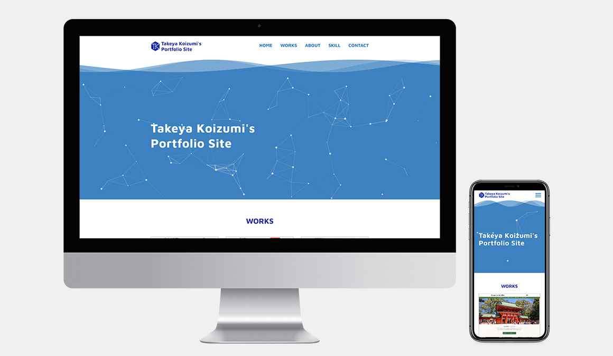

WORKS DETAIL
ポートフォリオサイト
Webサイト（PC、スマートフォン）

担当
企画 / デザイン / コーディング
制作期間
1ヵ月
使用ソフト
Illustrator / Photoshop / XD / Dreamweaver
作成プロセス
サイトのコンセプトは、
「一緒に仕事がしたいと思っていただけるよう、自分のスキルをアピールする」
「自分の持っている真面目さや誠実さ、
発想の独自性をアピールする」
です。
Web制作会社の採用担当の方に見てもらうことを想定して作成しています。
デザインコンセプト
- 誠実さを伝えて信頼感を与えるために、全体的に青と白の配色とする。
- 作品を見やすくするため、ページの背景は基本的に白とする。
- フラットデザインのページとすることで必要な情報だけに目が行くようにする。
また、自身の優しさや物腰の柔らかさをアピールする。 - フラットデザインに合わせて、フォントはサンセリフ体・ゴシック体を使用する。
ポイント
-
見た人にインパクトを与えたい、jQueryを使えることをアピール
したいという思いから、ページのトップにアニメーションを実装
しました。
JSFiddleとparticle.jsといったライブラリを使用し、波と幾何学模様
の動きを表現しました。
海の中で新たな生命体が生まれる光景をイメージしており、深海生物のように未知の作品をこの世に生み出していきたいという思いが込められています。 -
初めに必ず見ていただきたい情報をトップページにまとめるようにしました。
そのため、作品一覧と自己紹介、連絡先のほかに、使用できるスキル一覧もトップページに載せています。
何ができるか、どんな人間かというのが分かりやすくアピールできるよう考えて構成しました。